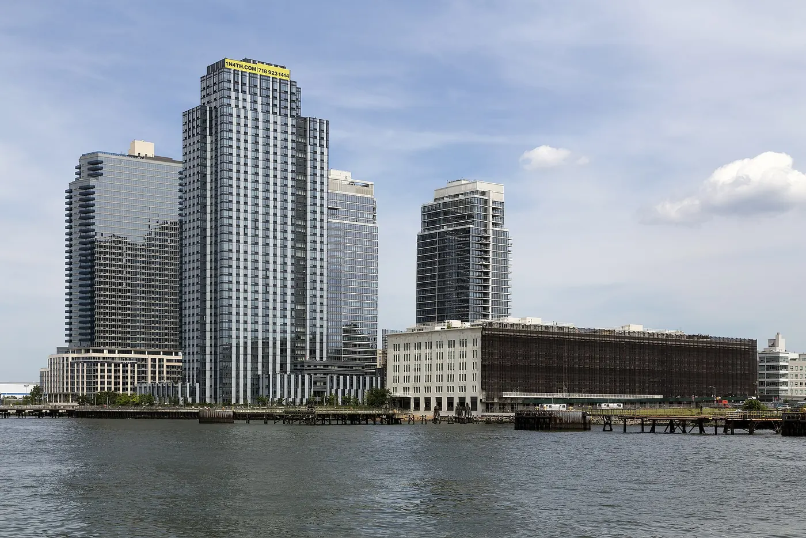
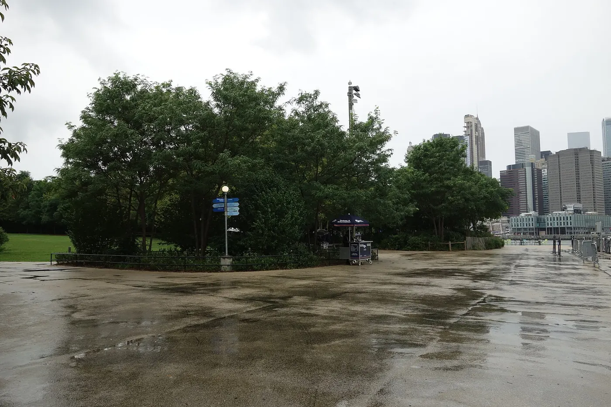

Manhattan
Midtown, Lower Manhattan, SoHo, the Village, the Upper East and West Sides and Harlem.

New York is a city of villages, and the fastest way to like it is to stop sightseeing and start walking one. These eight are worth a morning, an afternoon or a whole evening, and no two feel like the same place.
The most common mistake in New York is trying to see the city rather than a part of it. These eight areas are between 20 and 40 minutes apart by subway, but each has its own centre, its own food and its own pace.
Pick one for the morning and one for the evening, and let the walking between them be the plan. Every guide below has the same shape: what to see, where to eat, a suggested half-day and the practical details for getting there.
If you are building an itinerary, pair SoHo with the West Village, DUMBO with Brooklyn Heights, and give Astoria, Flushing or Jackson Heights a proper afternoon rather than squeezing two of them into one meal.

Each of these has a full guide with streets, food, a half-day plan and transit.
Cast-iron architecture, cobblestones and the city's densest shopping. Half a day, best on a weekday.

Brownstones, cafés, jazz basements and streets that ignore the grid. An afternoon into evening.

The Apollo, 125th Street, soul food and Black cultural history. Uptown and unhurried.

Waterfront views, Saturday food stalls, brunch queues and a loud, young nightlife.

Four cobbled blocks between two bridges, with the most photographed view in Brooklyn.

Greek bakeries and tavernas, a film museum and a waterfront park with the skyline opposite.

The city's biggest Chinatown: basement food courts, Main Street bakeries and a vast park.

Little India, a taqueria corridor under the 7 train and quiet garden apartment blocks.
All eight repay a walk. The table is for deciding which one gets your limited morning.
| Neighbourhood | Best for | Vibe | Time needed | Subway |
|---|---|---|---|---|
| SoHo | Architecture and shopping | Busy, photogenic, commercial | 3–4 hours | Prince St (N/R/W); Spring St (C/E) |
| West Village | Cafés, jazz and wandering | Village calm, low-rise, crooked streets | 3–4 hours or an evening | W 4 St (A/C/E/B/D/F/M) |
| Harlem | Music, soul food and history | Residential, proud, unhurried | 3–4 hours | 125 St (2/3; A/B/C/D) |
| Williamsburg | Brunch, bars and the waterfront | Young, loud, riverside | 3–5 hours | Bedford Av (L) |
| DUMBO | Bridge views and photography | Small, scenic, cobbled | 2–3 hours | High St (A/C); York St (F) |
| Astoria | Greek food and a local evening | Low-key, residential, hungry | 3–4 hours | Astoria–Ditmars Blvd (N/W) |
| Flushing | Chinese food and the Unisphere | Dense, busy, brilliant for lunch | 3–4 hours | Flushing–Main St (7) |
| Jackson Heights | South Asian and Latin American food | Working neighbourhood, food-first | 2–3 hours | Jackson Hts–Roosevelt Av (7/E/F/M/R) |
A word on timing: the Manhattan neighbourhoods are busiest at weekends, the Queens food districts at weekend lunch, and the Brooklyn waterfront whenever the sun is out. Weekday mornings are almost always the calmest.
If you would rather plan by area than by neighbourhood, begin with the borough guide.
Midtown, Lower Manhattan, SoHo, the Village, the Upper East and West Sides and Harlem.
Williamsburg, DUMBO, Brooklyn Heights, Park Slope, Bushwick and Coney Island.
Astoria, Long Island City, Jackson Heights, Flushing, Forest Hills and the Rockaways.
Yankee Stadium, the Grand Concourse, the Bronx Zoo and Arthur Avenue.
The free ferry, St. George, Snug Harbor and the best view of the Statue of Liberty.
One, or two if they are adjacent. SoHo and the West Village pair naturally, as do DUMBO and Brooklyn Heights. The Queens food districts deserve their own half-day each.
SoHo or the West Village if you only have an afternoon in Manhattan. Williamsburg or DUMBO if you want the skyline from Brooklyn. Jackson Heights if food is the main reason you came.
No. All eight are compact, walkable and well served by subway. A short list of streets and one restaurant is enough planning.
Yes. These are busy residential and commercial areas. As anywhere in New York, use city sense at night, keep to well-lit main streets and watch for pickpockets on crowded trains.
Pick your area, add one meal and one walk, and let the rest of the day happen. Our itineraries show how these pieces fit into three, five or seven days.